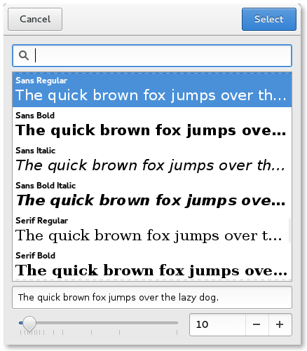

FontDialog QML Type
A font dialog. More...
| Import Statement: | import QtQuick.Dialogs |
| Since: | Qt 6.2 |
| Inherits: |
Properties
- options : flags
- selectedFont : font
Detailed Description
The FontDialog type provides a QML API for font dialogs.

To show a font dialog, construct an instance of FontDialog, set the desired properties, and call open(). The currentFont property can be used to determine the currently selected font in the dialog. The selectedFont property is updated only after the final selection has been made by accepting the dialog.
MenuItem {
text: "Font"
onTriggered: fontDialog.open()
}
FontDialog {
id: fontDialog
currentFont.family: document.font
}
MyDocument {
id: document
font: fontDialog.selectedFont
}
Availability
A native platform font dialog is currently available on the following platforms:
- iOS
- Linux (when running with the GTK+ platform theme)
- macOS
Qt Quick Dialogs uses a Qt Quick implementation as a fallback on platforms that do not have a native implementation available.
Property Documentation
options : flags |
This property holds the various options that affect the look and feel of the dialog.
By default, all options are disabled.
Options should be set before showing the dialog. Setting them while the dialog is visible is not guaranteed to have an immediate effect on the dialog (depending on the option and on the platform).
Available options:
| Constant | Description |
|---|---|
FontDialog.ScalableFonts | Show scalable fonts. |
FontDialog.NonScalableFonts | Show non-scalable fonts. |
FontDialog.MonospacedFonts | Show monospaced fonts. |
FontDialog.ProportionalFonts | Show proportional fonts. |
FontDialog.NoButtons | Don't display Open and Cancel buttons (useful for "live dialogs"). |
FontDialog.DontUseNativeDialog | Forces the dialog to use a non-native quick implementation. |
selectedFont : font |
This property holds the currently selected font in the dialog.
The selectedFont property is updated while the user is selecting fonts in the dialog, even before the final selection has been made.
The accepted() signal can be handled to get the final selection. When the user has clicked Open to accept a font, a signal handler for the accepted() signal can query the selectedFont property to get the final font that was selected by the user.
See also currentFont and accepted().